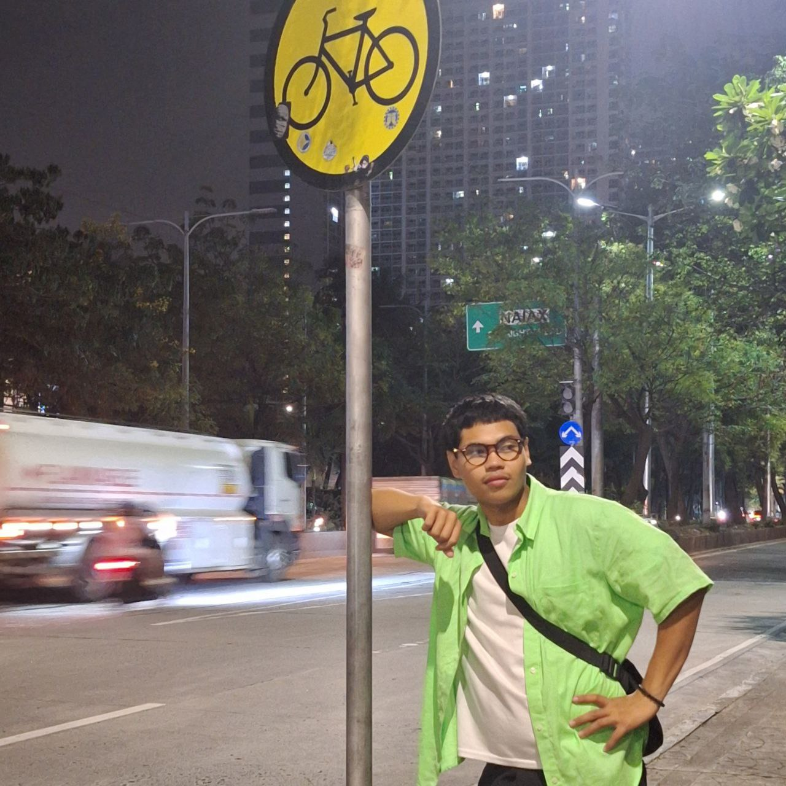

Sup, I'm
Marion Niño B. Chan Jr.
I am a 2nd-year student currently pursuing a Bachelor of Science in Information Technology at Cavite State University. I'm also the one behind this website (with the help from my AI co-pilot 😁). I'm still a beginner, but every project pushes me beyond my comfort zone.

A little about me
Some things that make me, ME😝.
Studying
BS Information Technology at Cavite State University - Silang Campus.
Hobbies
Playing online games, Fan of Marvel, late-night coding (when scrambling to finish a project on time... hehe), and trying out new things.
Goal
To become a web/game developer who builds useful and good-looking sites/games.
Fun fact
Spending an hour fixing a major bug that was literally just one missing semicolon.😭
What I'm learning
I'm still a beginner, and I'm proud of it. Here's where I am right now.
My Journey So Far
From my first line of code to this website.
Started College (2025)
This is where my journey in Bachelor of Science in Information Technology began at Cavite State University - Silang Campus. Now, as a 2nd-year student, I'm excited to keep learning more about programming, web development, DBMS, and other core topics in my field.
Senior High School
I studied at Philippine Christian University - Dasmariñas Campus under the Information and Communications Technology - Computer Programming strand. It was my starting point in coding (though my past laziness is the reason I'm still a beginner today). This was also where I first experienced working in a corporate environment during our work immersion.
Junior High School
I studied at Paliparan III National High School in our barangay. Sparked my interest in tech through lessons on computer hardware, networking, and troubleshooting.